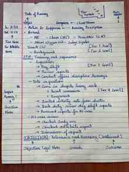
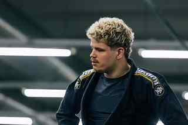
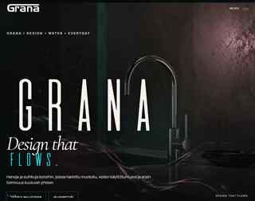
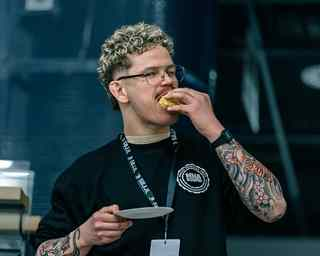
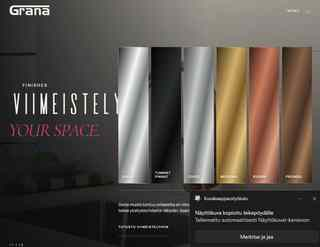
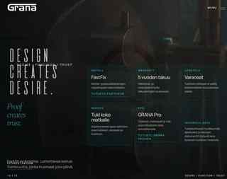

01 / Coaching
Capra
Combat
Placeholder project description. Valmennus, junioritoiminta, oppimisympäristöt ja kamppailulajien käytännön työ.




Placeholder-intro. Tämä versio käyttää nyt sinun oikeita kuvia: valmennusta, työympäristön tunnelmaa, käsinkirjoitettua paperia ja GRANA-projektia. Lopullinen teksti voidaan kirjoittaa myöhemmin tarkasti.
WORKSPACE / 2026
Coaching.
Brand & web.
Field notes.
Placeholder-teksti. Yksi vahva ajatus yhdistää tätä sivua: havainto ei vielä ole työ. Työ alkaa vasta, kun ideasta syntyy testattava asia.

Placeholder-teksti. Tästä osuudesta tehdään myöhemmin tarkempi henkilökuva: valmennus, yrittäjyys, brändi- ja verkkoprojektit sekä tapa oppia tekemällä.
Placeholder-tekstit toistaiseksi. Rakenne ja kuvallinen kieli on jo lähempänä lopullista suuntaa: muutama vahva projekti, ei liian monta korttia.
Placeholder project description. Valmennus, junioritoiminta, oppimisympäristöt ja kamppailulajien käytännön työ.
Placeholder project description. Premium-vesikalustebrändin maailma, verkkosivut ja digitaalinen kokemus.


Placeholder project description. Käsin kirjoitettuja havaintoja valmennuksesta, yrittämisestä, projekteista ja oppimisesta.
Tässä kohtaa idea toimii hyvin: oikea paperi, oikeat valmennuskuvat ja oikea henkilökuva tekevät sivusta heti vähemmän geneerisen. Tekstit voidaan vielä vaihtaa paremmiksi.
Placeholder-arkisto. Myöhemmin tähän voidaan nostaa kirjoituksia valmentamisesta, projekteista ja oppimisesta.
Lyhyt ingressi tähän. 2–3 riviä siitä, mitä tekstissä käsitellään ja miksi sillä on merkitystä.
Lyhyt ingressi tähän. Keskeneräinen mutta testattava asia opettaa enemmän kuin vielä yksi suunnittelukierros.
Lyhyt ingressi tähän. Pieni havainto, joka muuttui käytännön työkaluksi.